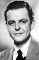
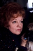

Country:United States, 139 minutes
Spoken languages:
Genres:Comedy, Family, Fantasy
Director(s):Robert Stevenson
Writer(s):P.L. Travers, Bill Walsh, Don DaGradi
Video Codec:Unknown
Number: 1585


Certification:
Storyline:
A magical nanny employs music and adventure to help two neglected children become closer to their father.
Cast:  


Medium: Original DVD,
Loaned: No
Aspect ratio: Unknown